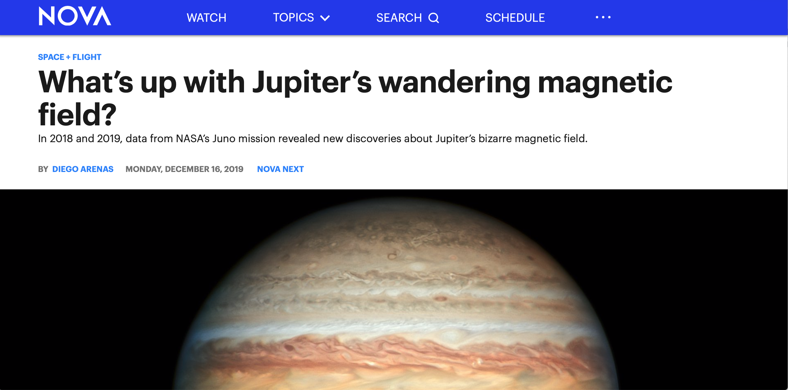
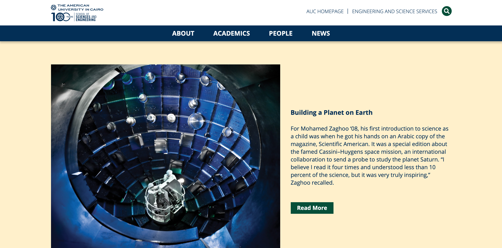
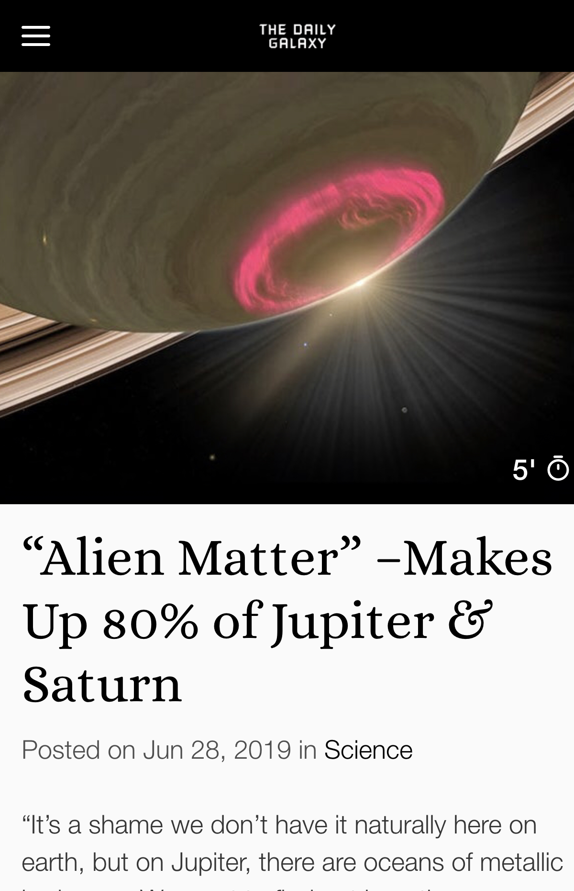
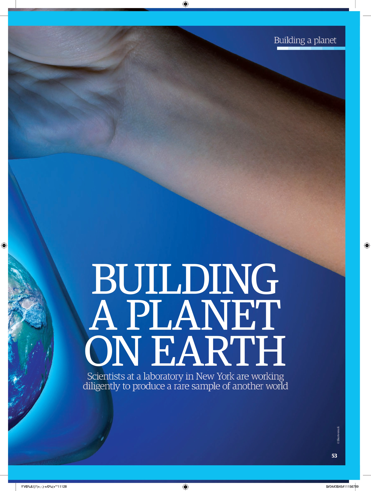
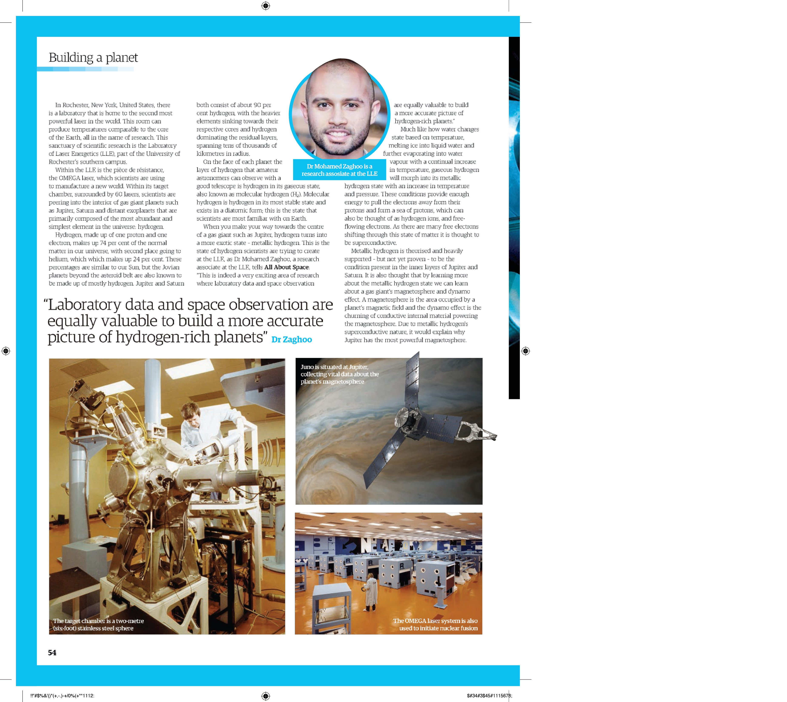
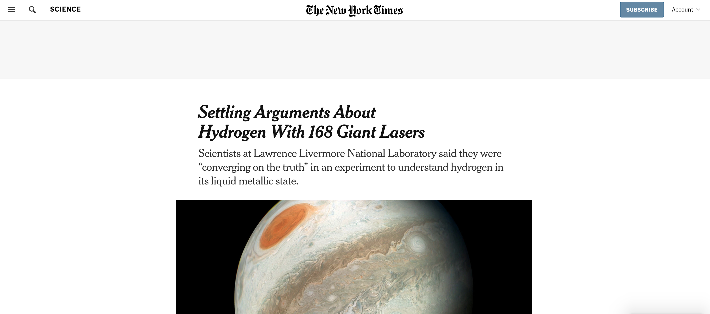
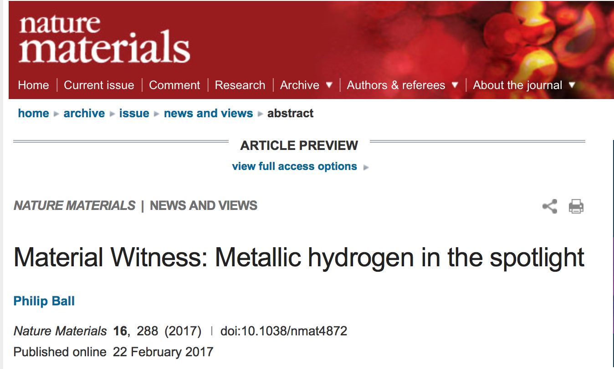
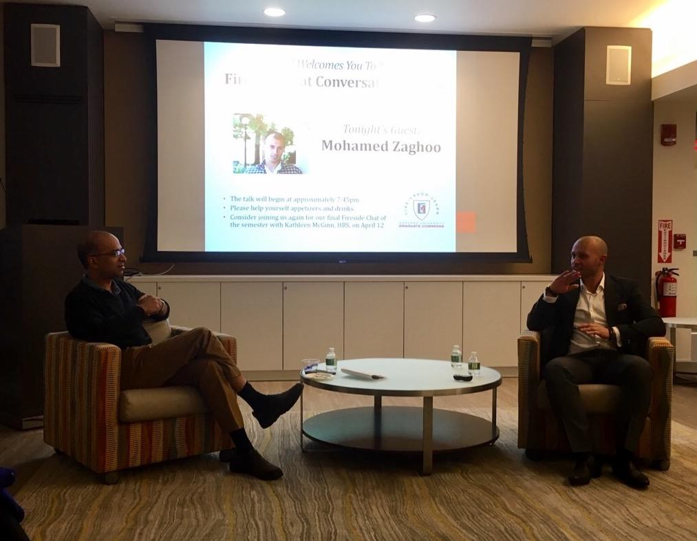
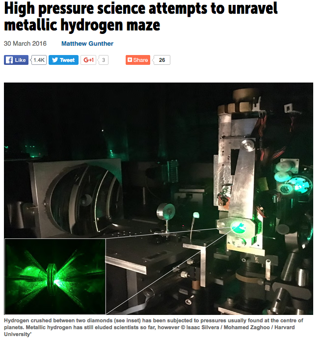

My interview in PBS Nova about Jupiter's magnetic field
Read the coverage

 Mohamed Zaghoo
Mohamed ZaghooApplied Physicist · AI Post-Training Lead · Technical Founder
Interviews & coverage
My interview in PBS Nova about Jupiter's magnetic field
Read the coverage
My interview in "AUC news" about work, life and planetary science
Read the coverage
My interview in "The Daily Galaxy" website about metallic hydrogen in Saturn and Jupiter's interiors
Read the coverage
My interview in "All about space" magazine about reproducing Jupiter's planetary conditions using laser techniques

Our work on metallic hydrogen was recently confirmed by new expriments at the National Ignition Facility at Livermore CA. Read more about it in the NYTimes
Read the coverage
The research efforts reporting on the realization of metallic hydrogen at bench conditions is highlighted in Nat. materials
Read the coverage
Honored to be part of Harvard's "Meet the Scholar" 2017 series. A fireside chat with Prof. Guhan Subramanian, the Joseph Flom Professor of Law & Business, entitled "Reaching for the Jovian heavens"

Our static work on metallic hydrogen was featured in the Royal Society Chemistry news.
Read the coverage
